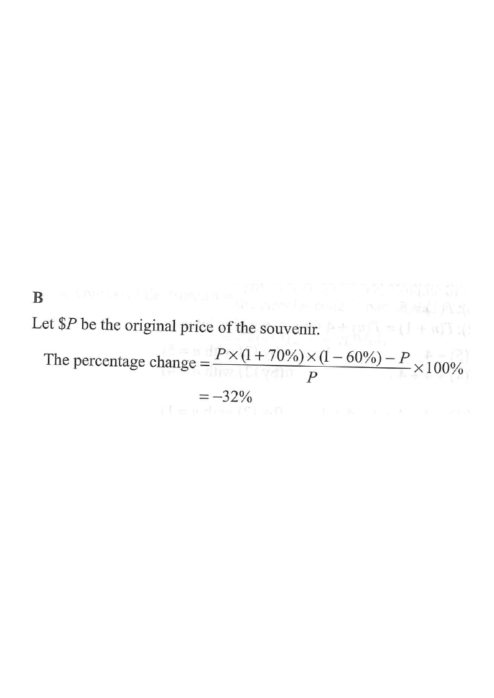

Scroll the solution to see each stage highlighted.
If the price of a souvenir is increased by 70% and then decreased by 60%, find the percentage change in the price of the souvenir.

Introduce a variable for the starting price so that we do not need an actual number. Take the original price to be $P$.
For convenience we may even take $P = 100$, so the original price is 100 (units).
Hint: a percentage change is independent of the actual price — choosing a convenient base (like 100) makes the arithmetic easy.
An increase of $70\%$ means the new price is $1 + 70\% = 1.7$ times the original.
New price after the increase: $$ P(1 + 70\%) = P \times 1.7 = 1.7P $$ With $P = 100$: $100 \times 1.7 = \mathbf{170}$.
Hint: "increased by $r\%$" ⇒ multiply by $(1 + r\%)$.
A decrease of $60\%$ means the price becomes $1 - 60\% = 0.4$ times what it was.
Final price: $$ 1.7P \times (1 - 60\%) = 1.7P \times 0.4 = 0.68P $$ With $P = 100$: $170 \times 0.4 = \mathbf{68}$.
Hint: "decreased by $r\%$" ⇒ multiply by $(1 - r\%)$.
\[ \text{Percentage change} = \frac{P(1+70\%)(1-60\%) - P}{P} \times 100\% \]
\[ = \frac{0.68P - P}{P} \times 100\% = \frac{-0.32P}{P} \times 100\% = -32\% \]
With $P = 100$: $\dfrac{68 - 100}{100} \times 100\% = -32\%$.
Hint: percentage change $=\dfrac{\text{new} - \text{original}}{\text{original}} \times 100\%$. Negative result means a net decrease.
The overall percentage change is a net decrease of $32\%$, i.e. $-32\%$.
This matches option B.
Hint: successive percentage changes multiply — they are not simply additive ($+70\% - 60\% \ne +10\%$).